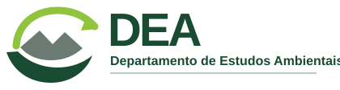

Indicadores anuais do DEA
Produção anual do DEA em 2025 e 2026.
DEA 2026DEA 2025

Preparando painel e indicadores...
Comparação da produção anual e situação atual das entregas registradas na planilha.
O campo “Planejamento anual” é usado para distinguir entregas previstas, produtos novos e iniciativas que avançam para 2027.
Por padrão, são exibidos apenas Estudos e Projetos. Use os filtros para adicionar ou retirar outras categorias.
| Tipo | Planejamento anual / classificação | Atividade / produto | Status | Público-alvo | Tipo de publicação | Detalhes / comentários |
|---|